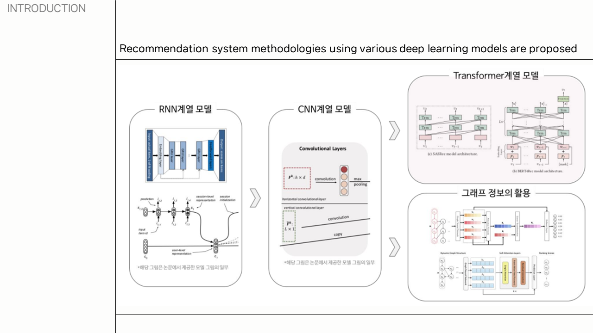
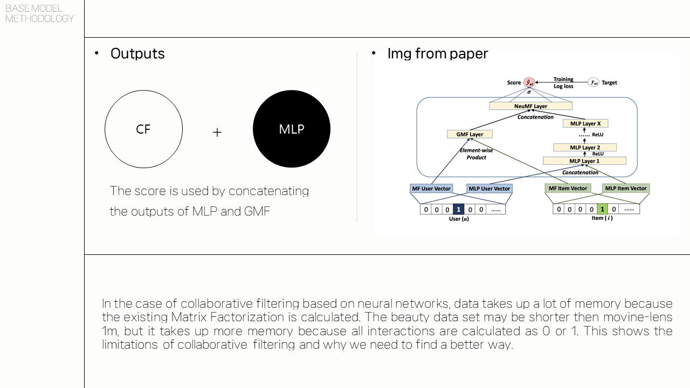
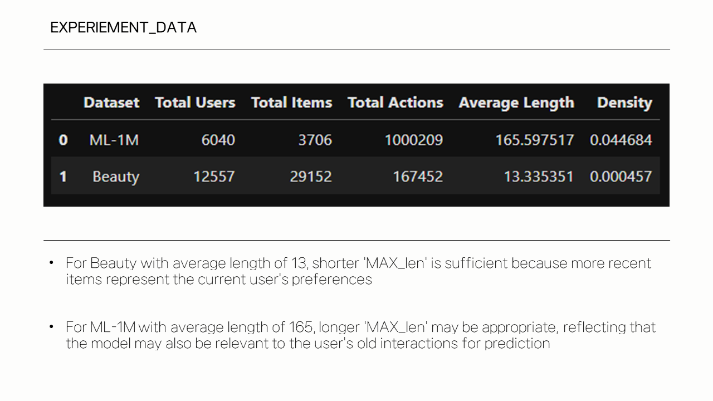
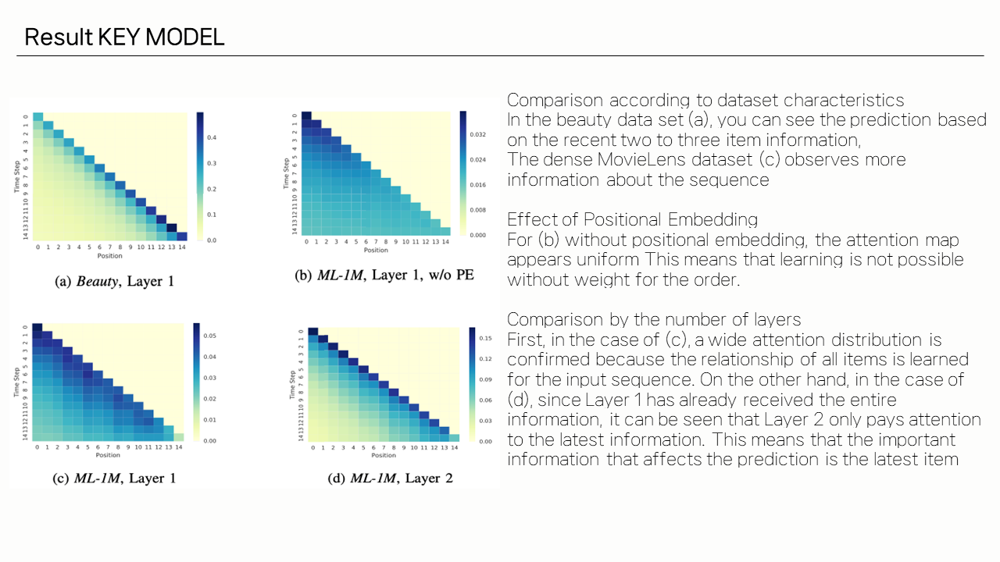

Problem
사용자의 과거 상호작용이 sparse하고 순서 정보가 중요한 상황에서 단일 모델만으로는 추천 품질을 설명하기 어렵습니다.
AI / Recommendation
추천 시스템의 핵심 질문은 사용자의 다음 선택을 어떻게 더 정확하게 예측할 것인가입니다. 이 프로젝트는 NCF, Caser, SASRec, BERT 계열 모델을 비교하며 데이터 특성과 모델 구조가 추천 품질에 미치는 영향을 발표 자료로 정리했습니다.
사용자의 과거 상호작용이 sparse하고 순서 정보가 중요한 상황에서 단일 모델만으로는 추천 품질을 설명하기 어렵습니다.
행렬분해 기반 관점에서 출발해 neural collaborative filtering, convolutional sequence modeling, self-attention 기반 모델로 비교 범위를 확장했습니다.
각 모델이 어떤 데이터 패턴을 잘 포착하는지 설명하고, 프로젝트 발표 자료를 통해 모델 선택 기준을 한눈에 볼 수 있게 구성했습니다.
Selected Slides




